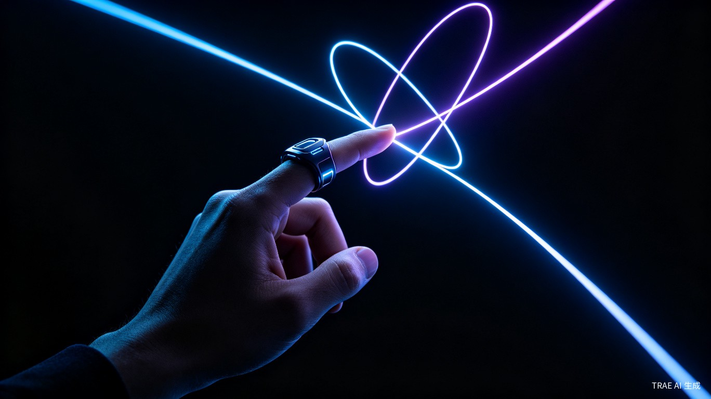
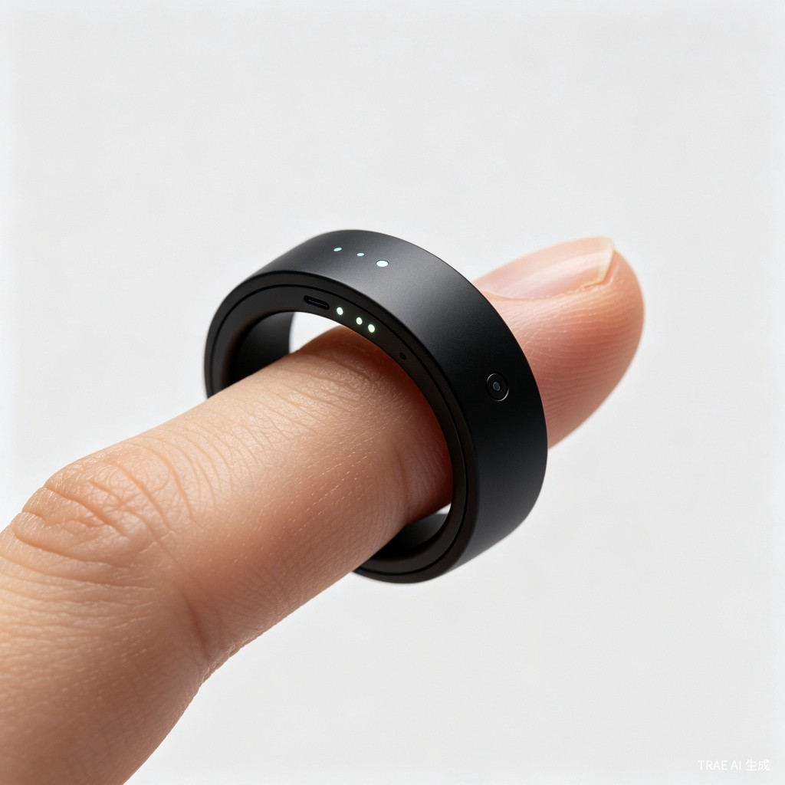
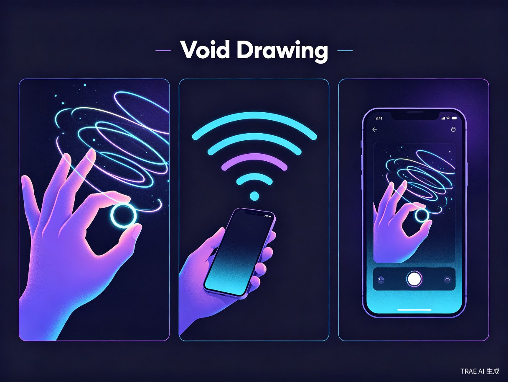
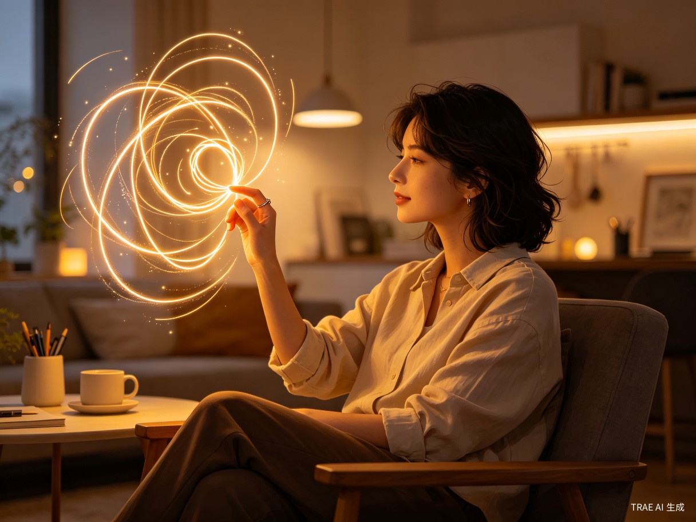

VoidDraw 是一款基于智能指环的空中绘画交互系统概念 Demo。用户佩戴指环后，在空气中自由挥动手部，系统实时追踪三维运动轨迹，将手势转化为数字画作。绘画结束后，作品通过蓝牙即时同步到手机端，支持编辑、分享和导出。
本 Demo 是一个完整的 Web 概念验证页面，包含动态粒子背景、交互式绘画画布、产品功能展示、技术规格说明等模块，全面呈现 VoidDraw 的产品愿景和交互体验。
9轴 IMU 传感器以 1000Hz 采样率精确捕捉手部三维运动
蓝牙 5.3 传输，延迟低于 50ms，绘画结束秒传手机
神经网络实时处理抖动，自动平滑与美化线条
支持霓虹、水墨、素描、油画等 12 种艺术风格


在一次 VR 绘画体验中，我注意到手柄的体感追踪已经非常精准，但设备仍显笨重。随即想到——如果绘画工具能「缩小到一枚戒指上」，是否能让创作变得更自然、更随身？
结合近期智能穿戴设备和空间计算的技术趋势，VoidDraw 的概念应运而生。智能指环是当前可穿戴设备中兼顾「轻量化」与「交互潜力」的最佳形态。相比手柄和手套，指环更贴近日常佩戴习惯，且 IMU + 触控的组合已趋于成熟。
我认为未来 2-3 年内，指环式交互会成为继触屏之后的下一个主流交互范式。Apple Vision Pro 已经证明了空间计算的市场潜力，但头戴设备仍太重。智能指环作为「最轻量级的空间交互入口」，有巨大的想象空间。
提前构建概念演示有助于验证产品想象力，也为后续硬件原型开发提供清晰的方向指引。VoidDraw 不仅是一个绘画工具，更是探索「无屏幕交互」可能性的先锋实验。

在浏览器中模拟 VoidDraw 的核心绘画体验
上方画布模拟了 VoidDraw 的核心绘画体验。在真实设备中，你的手指就是画笔，空气就是画布。这里用鼠标/触摸拖动来模拟手部运动轨迹。
1. 在黑色画布区域按住鼠标/手指拖动即可绘画
2. 点击「切换颜色」更换画笔颜色（6种霓虹色）
3. 点击「光效开关」开启/关闭发光效果
4. 点击「清空画布」重置画布
从创意到可体验 Demo 的完整开发历程
在 TRAE 中描述产品概念和视觉风格需求，AI 辅助完成暗色科技风设计系统、CSS 变量体系和响应式布局框架。确定了蓝紫霓虹渐变主题、粒子背景动画、卡片式内容组织方式。
使用 TRAE 对话式开发完成 Hero 区、产品理念、核心功能、工作流程、技术规格、创意画廊等全部页面模块。AI 生成可运行的 HTML/CSS/JS 代码，我负责调整交互细节和视觉层次。
在 TRAE 中描述「可绘画画布」的需求，AI 生成完整的 Canvas 绘图逻辑，包括鼠标/触摸事件处理、路径绘制、颜色切换、发光效果、清空功能。实现了接近真实设备的绘画体验。
使用 TRAE 的 AI 生图功能，批量产出产品概念图、智能指环特写、工作流程图、App 界面图、生活场景图等 5 张高质量视觉素材，确保整体视觉风格统一。
在 TRAE 中完成性能优化（粒子数量控制、Canvas 重绘策略）、移动端适配、浏览器兼容性测试，最终生成自包含的 HTML 文件包，零依赖可直接运行。
80 个粒子的实时连线动画在低端设备上可能造成卡顿。解决方案：使用 requestAnimationFrame 节流、减少连线计算距离阈值、在移动端自动降低粒子数量到 40 个。
鼠标和触摸事件的坐标系不同，且需要考虑高 DPI 屏幕的缩放问题。解决方案：统一封装 getPos 函数处理两种输入源，使用 getBoundingClientRect 计算相对坐标，支持 Retina 屏幕的 devicePixelRatio 适配。
纯黑背景上的霓虹色文字可能存在对比度不足问题。解决方案：使用 WCAG 标准验证对比度，正文采用 #f0f0f5（接近白）而非纯白，辅助文字使用 #8a8a9a 确保层次分明。
初赛 Demo 已完成核心体验验证，复赛阶段将推进以下工作
基于 ESP32-S3 开发指环固件，实现 9轴 IMU 数据采集和蓝牙传输
开发 iOS/Android 原生应用，实现作品接收、编辑、分享完整闭环
训练专门的神经网络模型，实现抖动消除、意图识别、风格迁移
支持在三维空间中创作立体线条艺术，360度旋转查看和导出
搭建作品分享社区，支持创作者展示、交流、售卖数字艺术作品
优化固件功耗管理，目标实现 7 天连续使用续航，磁吸快充支持